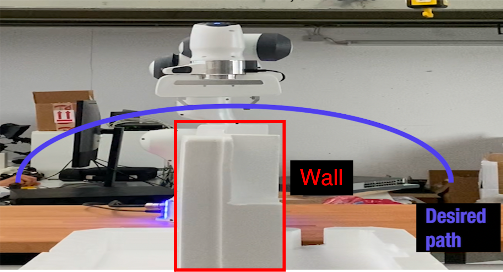
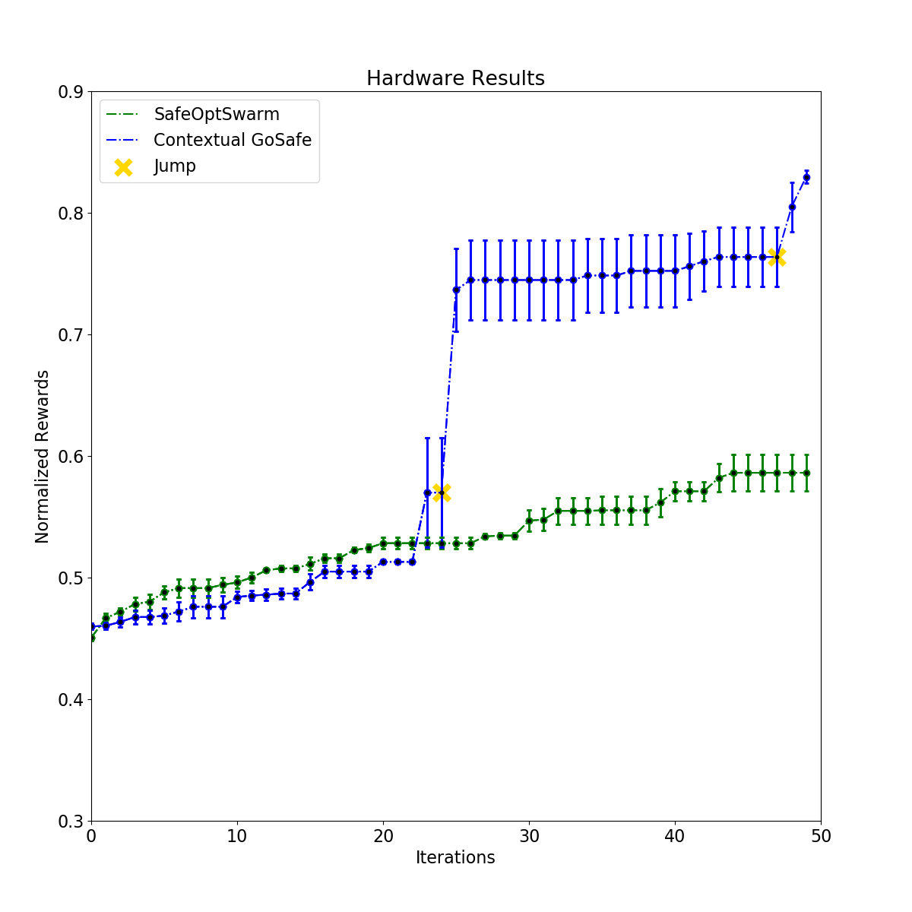

This is a blog about our recent work on GoSafe.
Safely learning policies from data is a major concern when optimizing directly on hardware systems since even single fault can lead to hardware damage, inducing high costs in terms of money and time investment. Existing methods that can guarantee safety during exploration are either limited to finding local optima or to low dimensional systems. In this work, we build upon the existing GoSafe algorithm to enable learning of globally optimal policies in high dimensional settings while still providing safety guarantees. In particular, we introduce contextual GoSafe and demonstrate its applicability on a real robot arm.
See a video of our hardware experiments here.
We apply our algorithm to find optimal feedback gain matrix K of a operational space impedance controller for a path following task. The hardware we consider is the Franka Emika Panda seven DOF robot arm. The desired path is depicted in the figure below.
We require the controller to follow the desired path as accurately as possible. This is especially necessary as the path is very close to the wall as depicted in the figure. This simulates a realistic task, where the end-effector is asked to pick an object on the one side of the wall and drop it on the other.
We compare SafeOpt (SafeOptSwarm) with our method GoSafe Contextual. We run only 50 iterations for each algorithm. Additionally, we evaluate our methods over three independent runs.
The safe set for the underlying problem is connected. Hence given enough iterations, SafeOptSwarm should be able to discover the global optimum. Nonetheless, as we restrict ourselves to 50 iterations, the question we want to investigate is whether global exploration of GoSafe can allow us to learn the optimum earlier.Below is a video of our hardware experiments.
During our experiments, both approaches provide 100% safety in all three runs. However, as can be seen in figure below, the parameters recommended by our method perform considerably better than SafeOptSwarm. This underlines the advantage of global exploration and our method.
Globally Optimal Safe Robot Learning: https://arxiv.org/abs/2105.13281
Safe controller optimization for quadrotors with Gaussian processes: https://ieeexplore.ieee.org/document/7487170
Bayesian Optimization with Safety Constraints: Safe and Automatic Parameter Tuning in Robotics: https://arxiv.org/abs/1602.04450
Safe Exploration for Optimization with Gaussian Processes: http://proceedings.mlr.press/v37/sui15.html
The algorithm builds up on the existing SafeOpt implementation.
The full code is available here.